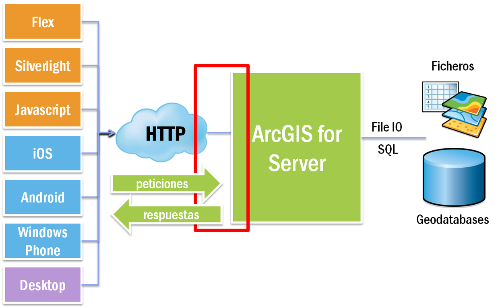

Con mis propios datos
Mapa con Mis Datos
¿De donde vienen los datos?

Como todo lo bueno..
a través de una API REST
ArcGIS for Server
Servicios de Mapa
Servicios de Features
Servicios de Geo-Procesos
Servicios de Rutas
...
ArcGIS Online
en la nube
SaaS
www.arcgis.com
developers.arcgis.com
Las APIs/SDKs de ArcGIS
iOS
Android
Windows Phone
Java
.NET
Qt
MacOSX
Silverlight
Flex
JavaScript
REST
ArcGIS for Server
ArcGIS Online
[next]